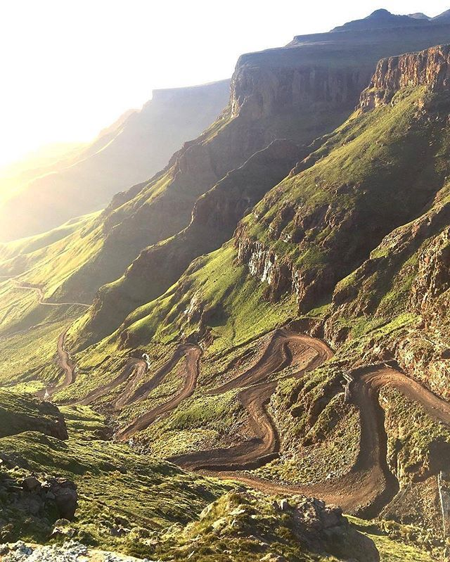
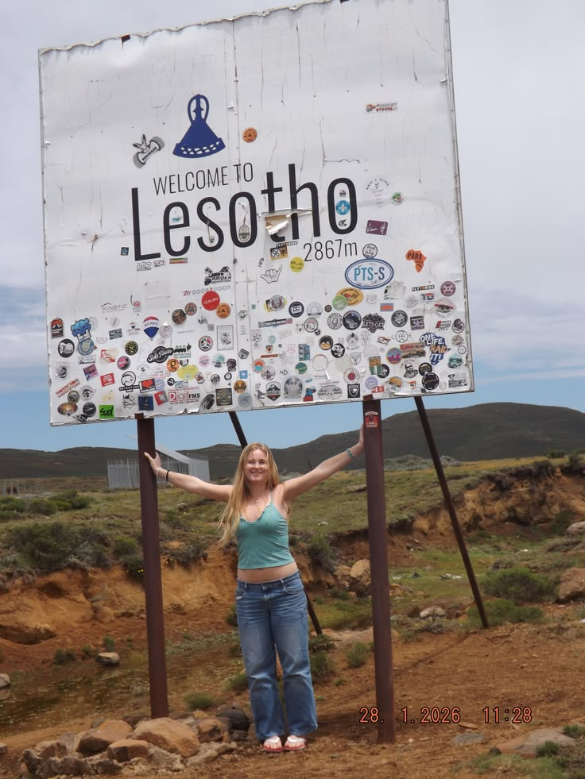

Story of the Roof
The legend, the people, and the birth of a bucket-list event
History of Sani Pass
For centuries, this dramatic route was used by Basotho traders on horseback. In the 1950s, the first 4x4s crawled up the steep grade, connecting KwaZulu-Natal to the mountain kingdom. Today, it's a mecca for adventurers – and our event celebrates that rugged spirit while supporting local communities.
Why This Event Exists
We created the Sani Pass 4x4 Experience to share Lesotho's raw beauty with the world, while directly benefiting the villages of Mokhotlong. Every ticket helps fund a local school and provides fair wages for Basotho guides, cooks, and storytellers.
500+ visitors yearly
23 local jobs
4.8 guest rating
Who Should Join?
- Adventure travellers & 4x4 owners
- International tourists craving authentic Africa
- Nature & landscape photographers
- Cultural explorers & music lovers
- Anyone seeking altitude & adrenaline

